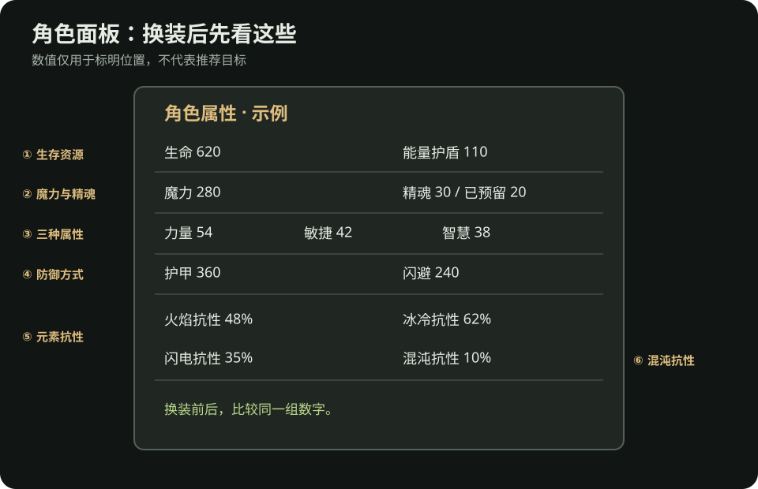

流放之路 2：看懂角色面板
这页只解决一个问题：换装备、升级技能后，角色实际上有没有更稳、更能打。角色面板的位置和数值显示随平台与版本可能不同；下图是教学示意，不是游戏截图。

新手先看这六处
| 区域 | 读法 | 什么时候回来看 |
|---|---|---|
| 生命与能量护盾 | 两者都是生存相关资源，但角色如何恢复与依赖它们，要看自己的技能和装备。 | 换防具、突然更容易死时。 |
| 魔力 | 主技能能否持续使用；药剂与回复能否跟上。 | 技能升级或装上辅助后消耗明显变高时。 |
| 精魂 | 看总额与已预留量；持续技能开启不了时先查这里。 | 获得精魂奖励、换持续技能或装备时。 |
| 力量／敏捷／智慧 | 装备和技能的使用条件。 | 换下提供属性的装备，或升级宝石后。 |
| 护甲／闪避等防御 | 它们处理不同类型的威胁；别只挑一个看起来最高的百分比。 | 同一类怪总能击倒你时，结合实际死因检查。 |
| 火、冰、闪抗性 | 看角色面板的实际数值，而不是把装备上的词缀自己相加。混沌抗性单独显示。 | 每进新章节、换装备、进入异界前。 |
战役推进过程中元素抗性会受到惩罚。某件装备写着“火焰抗性 +X%”，不代表角色面板的火抗就是 X%；要以面板显示为准。抗性通常有上限，初期先补明显偏低的一项，不必为了单一数值牺牲全部技能要求与生存属性。
换装前后怎么比较
- 换之前：记下火冰闪抗性、生命／能量护盾、关键属性，以及主技能能否使用。
- 换之后：再看同样几项。新装备让生命增加，却使火抗大幅下降或技能变灰，就还不能算直接升级。
- 进战斗验证：回原本能完成的同类区域打一轮，观察清怪、首领和死亡情况；角色面板的技能数字不能替代实战。
例子：换一件戒指后生命变高，但原戒指给的敏捷消失，主技能灰掉。先换回旧戒指，再在其他部位补敏捷，或到装备与交易找兼顾需求的替代品。不要因为新戒指有更多生命就继续穿着不能用技能的配置。
哪个症状先看哪里
资料
- PoE2 Wiki：抗性、精魂：角色面板对应数值及战役变化。
- PoE2 Wiki：属性、生命、能量护盾：装备与技能要求、生存资源的基本概念。